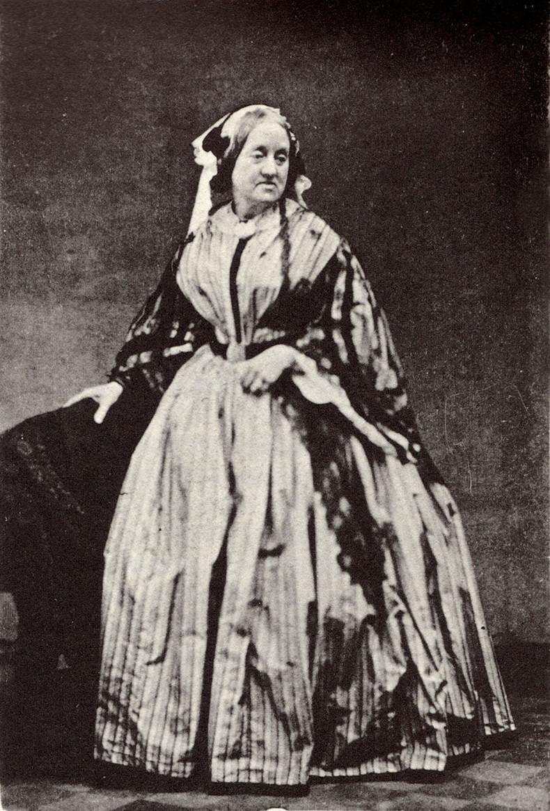
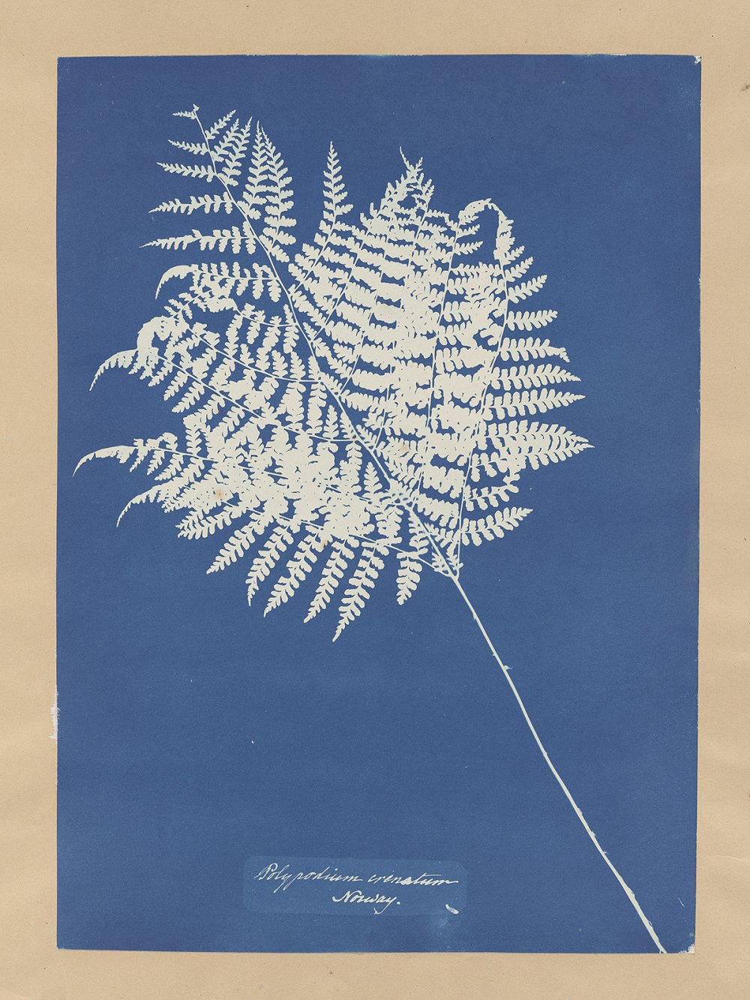
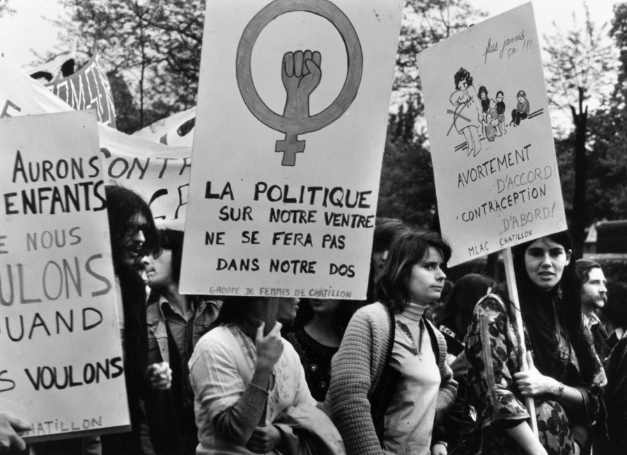
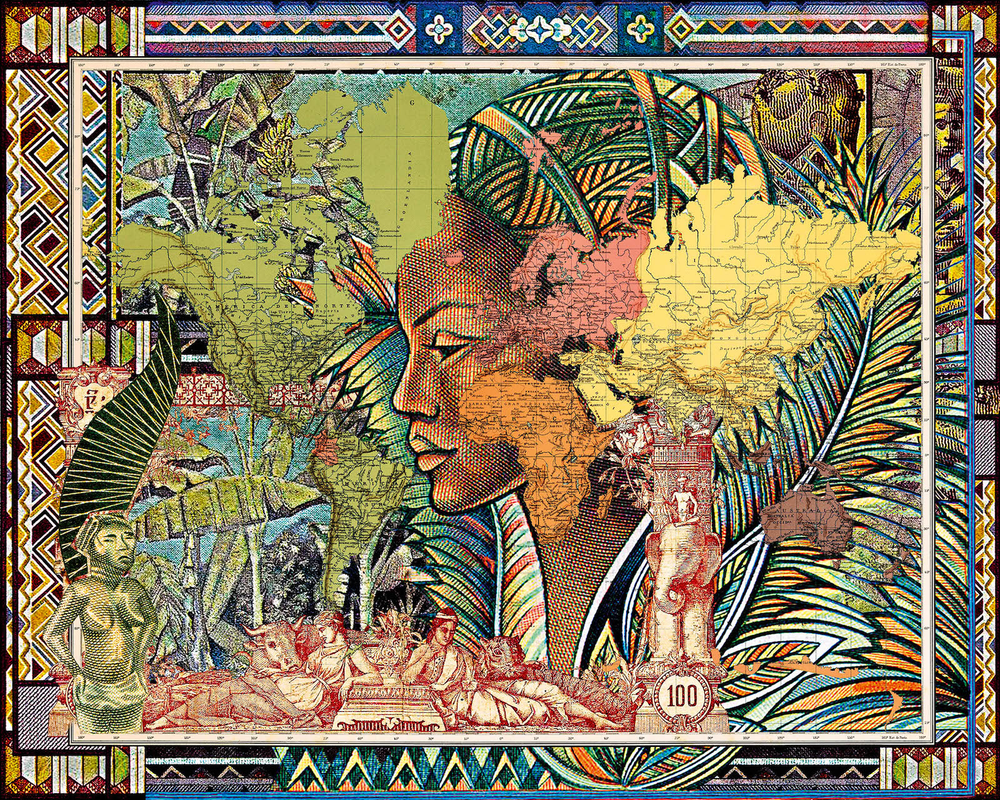
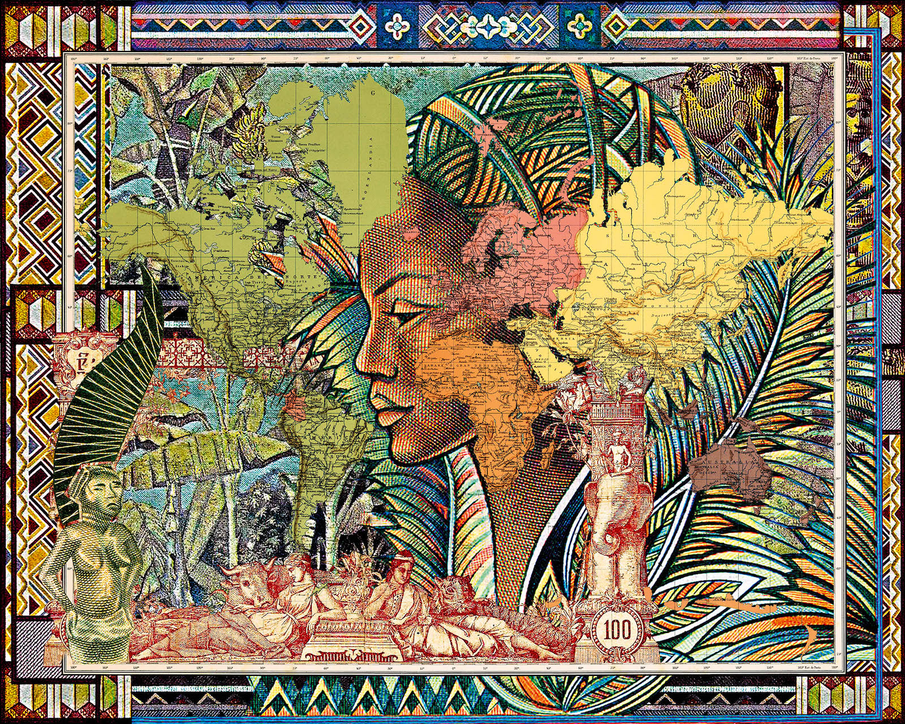

Not only photographers
Timespan: pioneer, revolutionary and visionary photographers
The chronological division of the photographers follows the three volumes of the "Donne Fotografe" edition by Contrasto publishing house. The photographers are organized into three groups depending on the decades: pioneer (1851-1936), revolutionary (1937-1970) and visionary (1970-2010). The pioneering period saw the opening to endless possibilities even if the career of photographer can prove to be a path full of pitfalls for a woman. The revolutionaries will then succeed in breaking the traditional patterns through their representations that become a real battleground. Finally, visionaries open up to a new imaginary, placing themselves at the forefront and carving out a space in the constantly evolving photography.
Main findings
Women have been using the camera since its origins and throughout the middle of the 19th century. Among the pioneers, there are many scholars of science who use photography to inventory their discoveries, such as Anna Atkins, a botany creator of cyanotypes that reproduce the contours of plants; as well as there are photographers who lead a double life, such as Edith Tudor-Hart, an established photographer of Austrian origin who becomes a spy for the KGB in the 1930s.
 In the middle of the 20th century, women used photography to take a stand and assert their personal gaze. Holding high the flag of the engaged photograph, they participate in multiple armed battles of their apparatus, from the Resistance to feminism. One example is the French photographer Janine Niépce, who studied art history in Paris during the Second World War and worked on some films about the Resistance. He then became a reporter and witnessed the events of May ‘68 and the Women’s Liberation Movement throughout the 1970s.
In the second half of the 20th century, the world of photography always focused on the West, is now globalized and giving rise to the progressive recognition of photographers from other continents as can be seen from the presence of women operating in India, South Korea or Madagascar. The boundaries between photography, film, performance and installation are increasingly blurred. There are many authors who, in the course of their projects, pass from one practice to another. Malala Andrialavidrazana, born in 1971 in Madagascar, after studying architecture in Paris, in the 90s takes an anthropological approach to photograph funeral customs and Malagasy commemorative rites. Between intimate exploration and sociological portrait, Malala overturns exotic stereotypes and so she is fully entitled under the label of visual and visionary artist.
 
